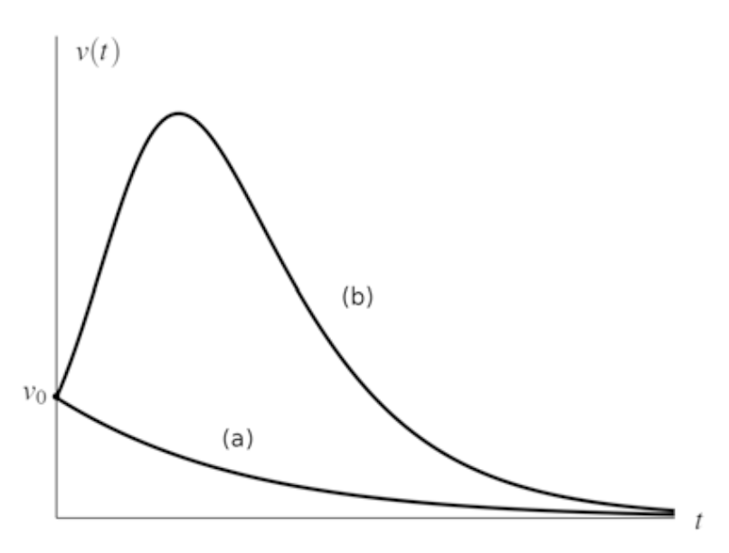
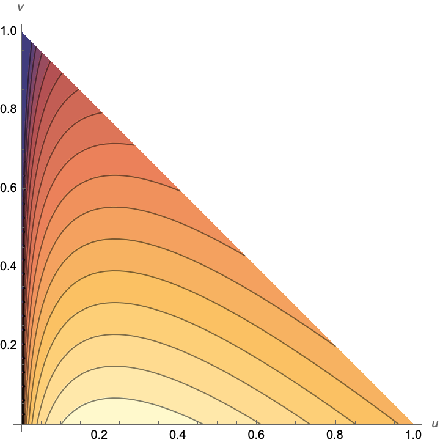
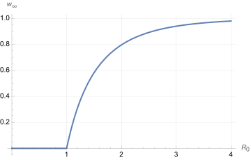

15 Mathematical epidemiology
This lecture is based on (Iannelli and Pugliese 2014, vol. 79, secs. 8.1–8.2)
Mathematical epidemiology is the study of the determinants and patterns of health and disease conditions in a given population though mathematical modeling. We all became familiar with epidemiology after COVID-19, but the subject has been of great study since the 1900s. Epidemic events have been recurrent in human history.
Epidemics have recurrent patterns, thus suggesting some basic mechanism or “law” at their basis.

The above example is quite beautiful in this sense: we observe 4 waves of 6-month period. Another example is measles (morbillo in italian):

At the beginning of the 20th century big cities in India were regularly hit by bubonic plague (peste bubbonica in Italian), as shown below:

Kermack and McKendrick studied the phenomenon in a series of seminar papers published in 1927. In particular, they have been able to successfully model the course of an outbreak, with its typical bell-shaped trend. The periodicity of outbreaks is more difficult to explain, as we shall see later.
15.1 The SIR model
The main idea is to approach the problem with a compartmental model, very much like a feed-forward network, like the example below:
![]()
The above diagram is the celebrated SIR model. We have 3 compartments:
- Susceptibles \(S(t)\), those who are healthy and can be infected;
- Infectives \(I(t)\), those with the disease and can transmit it;
- Removed \(R(t)\), those who are immune after having been infected or recovered (includes deaths are well).
With the hypotheses that
- susceptibles are infected only after a contact with an infected individual;
- transition from \(I\) to \(R\) class are due to infection progression within any individual;
- the population is large.
The last hypothesis justifies the use of continuous models. The parameters of the model are:
- Force of infection \(\lambda(t)\): the pro-capita rate at which susceptibles become infected;
- Removal rate \(\gamma(t)\): the rate at which infectives recover from the disease. We make the (strong) assumption that \(\gamma(t)=\gamma\) is constant.
The removal rate is the reciprocal of the average duration of the infection (remember the “bathtub” example). In fact, \(L \sim \mathrm{Exp}(\gamma)\) is a random variable giving the time of leaving the class \(I\). So, the probability that an individual is still infective at time \(t\) after the infection is: \[ \mathbb{P}[L > t] = e^{-\gamma t}, \]
which matches the solution of the ODE \(I' = -\gamma t\). So, we can intepret \(\gamma\) as follows: \[ \mathbb{E}[L] = \frac{1}{\gamma}. \]
For COVID-19 we have \(\gamma \approx \frac{1}{7}\,\text{days}^{-1}\).
The force of infection can be derived from the law of mass action (again): \[ \lambda(t) = c(t)\cdot\varphi\cdot\frac{I(t)}{N(t)}, \]
where:
- pro-capita contact rate \(c(t)\) is the number of contacts one individual has in a unit of time;
- infectiousness \(\varphi\) is the probability that a contact produces an infection when one individual is suspectible and the other is infective;
- total population \(N(t) = S(t) + I(t) + R(t)\).
We can explain the formula as follows: a susceptible individual will be in contact in a unit of time \(c(t)\) other individuals, \(I/N\) being infectives. The contact will yield an infection with probability \(\varphi\). Thus, the number of new infections between \(t\) and \(t+\Delta t\) is: \[ S(t)c(t)\varphi\frac{I(t)}{N(t)}\Delta t. \]
We assumed homogeneous mixing, in the sense that the whole population is active. The form slightly differs from the original SIR model from Kermack and McKendrick, because they did not divide by \(N(t)\) and \(c(t)\) had a different meaning.
15.1.1 The model
With the above assumptions, we have the following model for a single epidemic outbreak: \[ \left\{\begin{aligned} S' &= -\frac{\beta}{N} S I, \\ I' &= \frac{\beta}{N} S I - \gamma I, \\ R' &= \gamma I, \end{aligned}\right. \]
where we set \(\beta = c\varphi\), assumed constant.
Summing up the equation we have \[ S' + I' + R' = N' = 0, \]
so \(N = N_0\). The population is constant. As for chemical reactions, we can remove one equation (the last one) and normalize everything: \[ u = \frac{S}{N}, \quad v = \frac{I}{N}, \quad w = \frac{R}{N}, \quad \tau = \gamma t. \]
We obtain: \[ \left\{\begin{aligned} u' &= -R_0 u v, \\ v' &= R_0u v - v, \\ w' &= v, \end{aligned}\right. \]
and \(w = 1-u-v\). The number \[ R_0 = \frac{\beta}{\gamma} = c\varphi\cdot\frac{1}{\gamma} \]
is the basic reproduction number. It is the number of secondary cases produced, in a totally susceptible population, by a single infective individual during the time span of the infection.
The system is globally well-posed. When restricted to the \((u,v)\) coordinates, trajectories are bounded in the triangle: \[ \mathcal{T} = \bigl\{ (u,v)\in\mathbb{R}_+^2\colon u + v \le 1 \bigr\}, \]
since \(u+v+w=1\) and \(u,v,w\ge 0\). Actually, \(\mathcal{T}\) is positive invariant: when a trajectory enters \(\mathcal{T}\) it never leaves (integrating forward in time).
Note that equilibria are the whole \(u\) axis (\(v=0\)). This condition translates into the trivial fact that if no infectives are present, nothing happens.
From the first equation, \(u'(t) \le 0\) and \(u(t)\) is bounded from below, so \(u(t)\to u_\infty \ge 0\) as \(t\to+\infty\). Concerning \(v(t)\), note that: \[ w(t) - w_0 = \int_0^t v(s)\,\mathrm{d}s, \]
but \(w - w_0 = u_0 + v_0 - u - v \le 1\), and when we take the limit we get: \[ u_0 + v_0 - u_\infty - v_\infty = \int_0^\infty v(s)\,\mathrm{d}s \le 1, \]
so it must be that \(v(t)\to 0\) as \(t\to\infty\), otherwise the integral would diverge. In conclusion, at the end of the epidemic we have: \[ u_\infty \ge 0, \quad v_\infty = 0, \quad w_\infty = 1-u_\infty. \]
15.1.2 Major and minor epidemic
In spite that \(v_\infty=0\), the trend over time of \(v(t)\) may differ quite substantially, depending on the initial conditions and \(R_0\). We use the second equation of the SIR model: \[ v' = (R_0u - 1)v. \]
Since \(v\ge 0\), \(v'\) has the same sign of \(R_0u - 1\). But \(u' < 0\), thus if \(R_0 u_0 - 1 < 0\) then \(R_0 u - 1 < 0\) for all \(t > 0\). On the other hand, if \(R_0 u_0 - 1 > 0\), then there exists a \(t^* > 0\) such that \(R_0 u - 1 > 0\) for \(t< t^*\) and \(R_0 u - 1 < 0\) for \(t> t^*\). We have the following
Theorem 15.1 (Threshold)
- (Minor epidemic) If \(R_0 u_0 - 1 < 0\), then \(v'(t) < 0\) for \(t > 0\).
- (Major epidemic) If \(R_0 u_0 - 1 > 0\), then \(v'(t) > 0\) for \(0 < t < t^*\) and \(v'(t) < 0\) for \(t> t^*\) where \(t^*\) is such that \(R_0 u(t^*) = 1\).

In a major epidemic, the number of infectives increases before reaching a peak. The effective reproduction number is: \[ R_e(t) = R_0 u(t), \]
so when \(R_e(t) > 1\) the cases are increasing. The peak is for \(R_e(t^*)=1\).
15.1.3 The final equilibrium
We would like now to compute \(u_\infty\). This quantity is important, because it gives the total fraction of individuals that got the desease, that is the size of the epidemic: \[ \begin{split} w_\infty - w_0 &= u_0 + v_0 - u_\infty - v_\infty = u_0 + v_0 - u_\infty - v_\infty \\ &\approx u_0 - u_\infty, \end{split} \]
if \(v_0 \approx 0\) (very few infectives at the beginning.)
As done for Lotka-Volterra model, we can find a first integral by computing: \[ \frac{\mathrm{d}v}{\mathrm{d}u} = \frac{(R_0 u - 1)v}{-R_0 u v} = \frac{1}{R_0 u} - 1. \]
After integration we have that: \[ v(t) - v_0 = \frac{1}{R_0}\ln\frac{u(t)}{u_0} - (u(t)-u_0). \]
The level sets of \(R_0^{-1} \ln u - (u+v) = \text{const}\) look like this:

The contour lines are trajectories of the SIR model. Of course, if \(w_0=0\), we start from the line \(u+v=1\).
Taking the limit (using that \(v_\infty=0\)) we have: \[ 0 = \frac{1}{R_0}\ln\frac{u_\infty}{u_0} - u_\infty + u_0+v_0. \]
Let us define the function \[ H(z) = \frac{1}{R_0}\ln u - u, \]
then we have that: \[ H(u_\infty) = H(u_0) - v_0. \]
So, given \(u_0\) and \(v_0\) we can compute \(u_\infty\). Note that:
- \(H(z)\to-\infty\) as \(z\to 0\),
- \(H(1) = -1 < 0\),
- \(H'(z) = \frac{1}{R_0 z} - 1\) so \(z^* = \frac{1}{R_0}\) is stationary point,
- \(H''(z) = -\frac{1}{R_0 z^2} < 0\) so \(z^*\) is a maximum because the function is concave.
Graphically we see that if \(u_0 > 1/R_0\), then \(v = H(u_0) - v_0\) intersects \(H(u)\) in two points, one larger than \(u_0\) and the other much lower, both possible candidates for \(u_\infty\). But \(u_\infty < u_0\), so it is the smallest one. Note that \(u_\infty \ll u_0\) in this case (major epidemic). On the other hand, if \(u_0 < 1/R_0\), then \(H(u_0) - v_0 = H(u_\infty)\) only for one value \(u_\infty < u_0\), with \(u_\infty \approx u_0\) (minor epidemic).
15.1.4 Peak of infection
We can compute the peak of infection as follows. Assuming \(R_0u_0>1\), from the SIR model we have \(v'=0\) when: \[ u(t^*) = \frac{1}{R_0}. \]
From the integration we also have: \[ v(t^*) = v_0 + \frac{1}{R_0}\ln\frac{u(t^*)}{u_0} - (u(t^*)-u_0). \]
Substituting we obtain the peak number of infected cases (if multiplied by \(N\) of course): \[ v(t^*) = u_0 + v_0 - \frac{\ln R_0 u_0 + 1}{R_0}. \]
We the pandemic assumption, \(u_0\approx 1\), \(v_0\approx 0\) so: \[ v(t^*) = 1 - \frac{\ln R_0 + 1}{R_0}. \]
For instance, for \(R_0 = 10\) we have \(v(t^*)\approx 0.67\), so at the peak \(67\%\) of the population is infected.
15.1.5 Pandemic
In a pandemic event, most of individuals are susceptible, and the initial number of infectives is very small (a new virus). So, we can take \(u_0 \approx 1\) and \(v_0 \approx 0\). The value of \(u_\infty\) solves the equation: \[ H(u_\infty) = H(1) = -1, \quad\Rightarrow\quad \frac{1}{R_0}\ln u_\infty - u_\infty + 1 = 0. \]
The value of \(u_\infty\) can be computed numerically. We always have the solution \(u_\infty = 1\) but, when \(R_0 > 1\), there is another solution \(u_\infty \ll 1\). At \(R_0\) we have a bifurcation, as follows:

The value \(w_\infty = 1- u_\infty\) is called attack ratio.
15.1.6 Vaccination and herd immunity
The herd immunity is the portion of susceptible individuals that is immune to the disease. We have that: \[ u_0 = 1-p, \]
where \(p\) is the immune proportion. We can avoid a major epidemic when: \[ R_0 u_0 < 1, \quad\Rightarrow\quad p > 1 - \frac{1}{R_0} = p_V. \]
When \(p > p_V\) we reach the herd immunity, and a major epidemic cannot occur.
The value of \(p_V\) depends on \(R_0\), that we need to estimate. At the onset of the epidemic, \(v(t) \approx v_0 e^{rt}\) for some \(r>0\). If we plot \(\log(v(t))\) versus \(t\) the slope of the graph is an estimate for \(r\). Then, we have that \[ r = \beta u_0 - \gamma = \gamma(R_0 u_0 - 1), \quad\Rightarrow\quad R_0u_0 = \frac{r}{\gamma} + 1 = r T_I + 1, \]
where \(T_I\) is the average duration of the infection (this can also be estimated). For a new epidemic, \(u_0\approx 1\) so \(R_0 = rT_I + 1\).
15.2 SIR model with demography
The standard SIR model does not explain periodic waves. One obvious modification is to include demographic effects: newborns will be susceptible, so after a major epidemic event if we wait enough time \(u(t)\) will again go above the threshold and trigger a new epidemic event. An example is measles or flu.
The model is as follows:
![]()
The equations are: \[ \left\{\begin{aligned} S' &= bN -\frac{\beta}{N} S I - \mu S, \\ I' &= \frac{\beta}{N} S I - \gamma I - \mu I, \\ R' &= \gamma I - \mu R, \end{aligned}\right. \]
where \(b\) is the fertility and \(\mu\) the mortality rate, assumed constant. Again: \[ N' = S'+I'+R' = bN - \mu N, \]
consistently with the Malthus’ model. Assuming \(b=\mu\) we have constant population as before. Rescaling with: \[ u = \frac{S}{N}, \quad v = \frac{I}{N}, \quad w = \frac{R}{N}, \quad \tau = (\gamma+\mu) t \]
we obtain: \[ \left\{\begin{aligned} u' &= \alpha(1-u) - R_0 uv, \\ v' &= (R_0 u - 1)v, \\ w' &= v, \end{aligned}\right. \]
where we defined the parameters: \[ R_0 = \frac{\beta}{\gamma+\mu}, \quad \alpha = \frac{\mu}{\mu+\gamma}. \]
We can provide an interpretation of the above parameters. Intuitively, \(R_0\) is like in the standard SIR model, but now the average infectious period is not \(1/\gamma\) but rather \(1/(\gamma+\mu)\), because the “output” of \(I\) is \(-(\mu+\gamma)I\). It is slighly shorter since \(\mu>0\). Concerning \(\alpha\), we can understand it as the probability of infected individual to die during the infection period for natural causes (it “flows” downward in the above diagram rather than to the right.)
For measles, \(R_0 \approx 12\div 15\) and \(\alpha \approx 2.5\cdot 10^{-4}\). As expected, \(\alpha\) is very small, because \(1/\mu\) is very long (say 75 years) compared to \(1/\gamma\) (a couple of weeks.) So, \(t/\gamma\) or \(t/(\gamma+\mu)\) is the fast scale, whereas \(t/\mu\) is the slow scale.
15.2.1 Equilibria
Differently from the SIR model, we can study the present system is a very standard way. First, note that \(u + v + w = 1\), so we can remove the last equation and study the system of 2 ODEs in the region \(\mathcal{T}=\{u,v\ge 0\}\cap\{u+v\le 1\}\). Equilibria are intersections of: \[ \left\{\begin{aligned} u' &=0 &&\Leftrightarrow& v &= \frac{\alpha(1-u)}{R_0 u}, \\ v' &=0 &&\Leftrightarrow& v &= 0, \quad\lor\quad u = \frac{1}{R_0}. \end{aligned}\right. \]
We have 2 equilibria:
Disease Free Equilibrium (DFE): \[ E_0 = (1,0), \]
Endemic Equilibrium, only present when \(R_0 \ge 1\): \[ E^* = (u^*,v^*) = \left(\frac{1}{R_0}, \alpha - \frac{\alpha}{R_0}\right). \]
So, perhaps as expected, we have 2 cases: \(R_0 < 1\) and \(R_0 > 1\).
15.2.2 Stability
The Jacobian is: \[ J(u,v) = \begin{pmatrix} -\alpha - R_0 v & -R_0 u \\ R_0 v & R_0 u - 1 \end{pmatrix} \]
So, for each equilibrium: \[ \begin{aligned} J(1,0) &= \begin{pmatrix} \boxed{-\alpha} & -R_0 \\ 0 & \boxed{R_0 - 1} \end{pmatrix}, \\ J(u^*,v^*) &= \begin{pmatrix} -R_0\alpha & -1 \\ \alpha(R_0-1) & 0 \end{pmatrix}. \end{aligned} \]
The DFE is asymptotically stable if \(R_0-1<0\) (see the eigenvalues), otherwise is a saddle. The endemic equilibrium \(E^*\), when it exists, is asympotically stable, since \(\operatorname{tr}J^* = -R_0\alpha < 0\) and \(\det J^* = \alpha(R_0-1)>0\).
Actually, \(E^*\) could be a spiral, since \[ \Delta = (\operatorname{tr}J^*)^2 - 4\det J^4 = \alpha \bigl(\alpha R_0^2 - 4(R_0-1)\bigr) < 0, \quad\Leftrightarrow\quad \alpha < \frac{4(R_0-1)}{R_0^2}, \]
which is the case for measles, because \(\alpha\) is very small. With \(R_0=15\) and \(\alpha=2.5\cdot 10^{-4}\) the period is: \[ T = \frac{2\pi}{\sqrt{\Delta}} \approx 53 \]
units of time \(\tau\), so to obtain the original time we multiply by \(1/(\mu+\gamma)\approx 2\:\text{weeks}\), so the period is close to 2 years.
However, we do not have limit cycles. We have 2 ways of showing this. First, we can apply Dulac’s criterium with \(h(u,v) = 1/(uv)\): \[ \operatorname{div}(h\mathbf{f}) = \frac{\partial}{\partial u}\left( \frac{\alpha(1-u)}{uv} - R_0 \right) + \frac{\partial}{\partial v}\left( R_0 - \frac{1}{u} \right) = -\frac{\alpha}{vu^2} < 0. \]
Alternatively, we can show that \(E^*\) is globally attractive. Consider the Lyapunov function \[ V(u,v) = u - u^*\log u + v - v^* \log v, \]
which is the same we used for the prey-predator model. The function has a minimum at \((u^*,v^*)\). Note that we can write the system as: \[ \left\{\begin{aligned} \dot{u} &= R_0 u (\Phi(u) - v), \\ \dot{v} &= R_0 v (u - u^*), \\ \end{aligned}\right. \]
where \(\Phi(u) = \frac{\alpha(u-1)}{R_0 u}\). Then: \[ \begin{split} \dot{V}(u,v) &= \dot{u} - \frac{u^*}{u}\dot{u} + \dot{v} - \frac{v^*}{v}\dot{v} \\ &= R_0 (u-u^*)(\Phi(u) - v) + R_0 (v-v^*)(u - u^*) \\ &= R_0 (u-u^*)(\Phi(u) - v^*) \\ &= R_0 (u-u^*)(\Phi(u) - \Phi(u^*)) \\ &= R_0 \Phi'(\xi) (u-u^*)^2 \le 0. \end{split} \]
where we used \(\Phi(u^*)=v^*\) and the Lagrange theorem: there exists \(\xi\in(u,u^*)\) such that \(\Phi(u)-\Phi(u^*) = \Phi'(\xi)(u-u^*)\). Note that \(\Phi'(\xi)<0\). On the line \(u=u^*\) we have only one equilibrium \((u^*,v^*)\), so we conclude that it is globally attractive.
The same applies to the case \(R_0 < 1\), because in this case with \(V(u,v)\) as above and setting \(u^*=1\) and \(v^*=0\) (the equilibrium) we have: \[ \dot{V}(u,v) = R_0(u-1)\Phi(u) < 0 \]
in the region \(\mathcal{T}\). Thus, also DFE is globally stable.
15.2.3 Fast-slow dynamic
A final comment on the fast-slow structure of the system. Since \(\alpha \ll 1\), we could take the limit \(\alpha=0\). In this case, we obtain the SIR model, that brings us towards \((u_\infty,0)\) for \(u_\infty\) determined by \((u_0,v_0)\). This is the fast dynamic. On the slow scale, we set \(\eta = \alpha^{-1}\tau\), and we obtain the ODE \(\tilde{u}' = (1-\tilde{u})\): thus, once we got to \(u_\infty\), we slowly increase the value of \(u\) (because of newborns).
15.3 SEIR model
Perhaps the most obvious extension to the SIR model is the SEIR model:
- Exposed \(E(t)\): individuals exposed to the disease but not yet infective.
The corresponding model is:
![]()
where \(\nu\) is the reciprocal of the incubation period. The equations are: \[ \left\{\begin{aligned} S' &= \mu N -\frac{\beta}{N} S I - \mu S, \\ E' &= \frac{\beta}{N} S I - \nu E - \mu E, \\ I' &= \nu E - \gamma I - \mu I, \\ R' &= \gamma I - \mu R, \end{aligned}\right. \]
As usual \(S+E+I+R=N\) is constant. We can estimate \(R_0\) as before, using intuition: \[ R_0 = \underbrace{\frac{\nu}{\nu+\mu}}_{E\leadsto I} \cdot \beta \cdot \underbrace{\frac{1}{\gamma + \mu}}_{\text{infectious period}}, \]
the first term is the probability of surviving in \(E\) from natural death and move to \(I\).
We can remove the last equation and focus on \((S,E,I)\), with \(S+E+I\le N\). The system has only 2 equilibria: \(\text{DFE} = (N,0,0)\) and \[ \text{EE} = (S^*,E^*,I^*) = \Bigl( \frac{N}{R_0}, \frac{\mu N}{\mu +\nu} \frac{R_0-1}{R_0}, \frac{\nu}{\nu +\mu} E^* \Bigr). \]
We consider the Jacobian at the DFE and check when it becomes unstable: \[ J(S,E,I) = \left.\begin{pmatrix} -\frac{\beta}{N}I - \mu & 0 & -\frac{\beta}{N}S \\ \frac{\beta}{N}I & -(\nu+\mu) & \frac{\beta}{N}S \\ 0 & \nu & -(\gamma+\mu) \\ \end{pmatrix}\right|_{\text{DFE}} = \begin{pmatrix} -\mu & 0 & -\beta \\ 0 & -(\nu+\mu) & \beta \\ 0 & \nu & -(\gamma+\mu) \\ \end{pmatrix}. \]
The matrix has a block triangular structure: the first block is \(-\mu\), so one eigenvalue is \(\lambda_1 = -\mu < 0\). The second block is a \(2\times 2\) matrix, with negative trace and determinant: \[ \left| \begin{matrix} -(\nu+\mu) & \beta \\ \nu & -(\gamma+\mu) \\ \end{matrix}\right| = (\nu+\mu)(\gamma+\mu) - \beta\nu > 0, \quad\Leftrightarrow\quad R_0 < 1. \]
So, for \(R_0 > 1\) the DFE is unstable (saddle) and the trajectories go to the endemic equilibrium \(E^*\) (this is not a proof, but we can reasobly believe it.)
15.4 SEI(A)R model
A more complex example is the following:
![]()
Here we consider the additional class of:
- Asymptomatic \(A(t)\), individuals which are infected by they have no/mild symptoms.
Asymptomatics are less likely to infect susceptible individuals, for instance because they do have cough, so \(\varphi < 1\). Only a proportion \(p\) of exposed individuals becomes infectives. Finally, asymptomatics recover with a different rate \(\alpha\), for instance they recover faster than infected individuals.
Before writing the system, we can estimate \(R_0\): \[ R_0 = \underbrace{\frac{\nu}{\nu+\mu}}_{E\leadsto \{I,A\}} \cdot \Biggl[ p\cdot\beta\cdot \underbrace{\frac{1}{\mu+\gamma}}_{\text{$I$ period}} + (1-p)\cdot \beta\varphi \cdot \underbrace{\frac{1}{\alpha + \mu}}_{\text{$A$ period}} \Biggr]. \]
The system reads: \[ \left\{\begin{aligned} S' &= \mu N -\frac{\beta (I + \varphi A)}{N} S - \mu S, \\ E' &= \frac{\beta(I + \varphi A)}{N} S - (\nu +\mu) E, \\ I' &= \nu p E - (\gamma + \mu) I, \\ A' &= \nu (1-p) E - (\alpha + \mu) I, \\ R' &= \gamma I + \alpha A - \mu R. \end{aligned}\right. \]
We argue that when \(R_0>1\) we have an endemic equilibrium. Instead, we proceed as before by showing that the DFE becomes unstable when \(R_0>1\). The DFE is \((N,0,0,0)\), where we remove \(R\). The Jacobian is: \[ \begin{split} J(S,E,I,A) &= \left.\begin{pmatrix} -\frac{\beta}{N}(I+\varphi A) - \mu & 0 & -\frac{\beta}{N}S & -\frac{\beta\varphi}{N}S \\ \frac{\beta}{N}(I+\varphi A) & -(\nu+\mu) & \frac{\beta}{N}S & \frac{\beta\varphi}{N}S \\ 0 & \nu p & -(\gamma+\mu) & 0 \\ 0 & \nu (1-p) & 0 & -(\alpha+\mu) \end{pmatrix}\right|_{\text{DFE}} \\ &= \begin{pmatrix} -\mu & 0 & -\beta & -\beta\varphi \\ 0 & -(\nu+\mu) & \beta & \beta\varphi \\ 0 & \nu p & -(\gamma+\mu) & 0 \\ 0 & \nu (1-p) & 0 & -(\alpha+\mu) \end{pmatrix}. \end{split} \]
As before we have a block structure, with \(\lambda_1 = -\mu < 0\). The second block is a \(3\times 3\) matrix, so we need Routh-Hurwitz criterium for the stability. Let us call the block \(J_3\). The invariants are: \[ I_1 = \operatorname{tr} J_3, \quad I_2 = \frac{1}{2}\Bigl( (\operatorname{tr} J_3)^2 - \operatorname{tr} J_3^2 \Bigr), \quad I_3 = \det J_3, \]
where the characteristic polynomial is: \[ \mathcal{P}(\lambda) = \lambda^3 + a_1 \lambda^2 + a_2 \lambda + a_3 = \lambda^3 - I_1 \lambda^2 + I_2 \lambda - I_3, \]
so \(a_1 = -I_1\), \(a_2 = I_2\), and \(a_3 = -I_3\). Routh-Hurwit criterium is that \(J_3\) has eigenvalues with negative real part if and only if \[ a_1 > 0, \quad a_2 > 0, \quad a_3 > 0, \quad a_1 a_2 > a_3. \]
We have that if \(R_0 < 1\): \[ \begin{aligned} a_1 &= (\nu+\mu)+(\gamma+\mu)+(\alpha+\mu) > 0, \\ a_2 &= \ldots = (1-R_0)(\nu+\mu)\bigl((\alpha+\mu)+(\gamma+\mu)\bigr) + \text{positive terms} > 0, \\ a_3 &= \ldots = (1-R_0)(\mu+\alpha)(\mu+\gamma)(\mu+\nu) > 0, \\ a_1 a_2 - a_3 &= \text{positive terms} > 0. \end{aligned} \]
So, if \(R_0 < 1\) the DFE is stable, otherwise is unstable. The endemic equilibrium is similar to the previous case: \[ \text{EE} = (S^*,E^*,I^*,A^*) = \Bigl( \frac{N}{R_0}, \frac{\mu N}{\mu +\nu} \frac{R_0-1}{R_0}, \frac{p\nu}{\gamma +\mu} E^*, \frac{(1-p)\nu}{\alpha +\mu} E^* \Bigr). \]